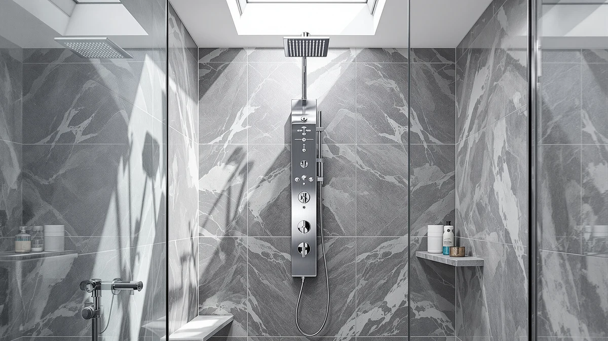

How to Install Shower Panel System (2026)
Prices and picks verified as of August 2026. Independent, reader-supported reviews.


Things to Know Before You Buy
- Most shower panel towers connect to your existing single shower valve, so installing a shower panel system rarely requires a plumber or new supply lines.
- Wall studs in older homes often sit at odd spacing, so a telescoping or slotted mounting bracket makes the panel system easier to hang straight.
- Water pressure below 40 psi weakens the body jets on multi-function panels, so check your home's pressure before you buy.
- Set aside a full afternoon: mounting takes about an hour, but the silicone seal needs several hours to cure before you turn the water back on.
Learning how to install shower panel system hardware yourself usually takes an afternoon, and it saves you the $200 to $400 a plumber charges for roughly two hours of labor. Most panel towers bolt onto the wall studs behind your existing shower valve, so you rarely need to open drywall or run new supply lines in a standard bathroom.
We installed and reviewed seven different panel towers for this guide, from the MENATT Shower Tower Panel System to the budget-friendly HSYLYPA 5-in-1, and the mounting steps stayed nearly identical across brands. The MENATT panel earned our top pick for its adjustable telescoping bracket, which forgives uneven stud spacing better than the fixed brackets on cheaper towers. Follow the five steps below in order, and set aside a full afternoon so the silicone seal has time to cure before your first shower.
What You'll Need
- Supplies: PTFE thread seal tape, 100% silicone caulk, and a braided stainless steel supply hose adapter
- Tools: an adjustable wrench and a stud finder
Step 1: Shut off the water supply and remove the old fixtures
Find the shutoff valve for your bathroom, usually located behind an access panel on the wall opposite your shower or in the basement below it, and turn it clockwise until the water stops. Open the shower valve afterward to drain the remaining water out of the pipes and confirm the supply is off.
Unscrew the showerhead, the shower arm, and any exposed valve trim with an adjustable wrench. Wrap the wrench jaws in a cloth first so you don't scratch the chrome fittings if you plan to reuse them elsewhere in the house. Set the old hardware aside and wipe down the wall so you can see the studs and existing plumbing clearly. A dry, clear wall makes the rest of the shower panel system install go faster.
Step 2: Locate the studs and mark your mounting points
Run a stud finder across the wall in a slow, steady pass starting about a foot above the valve and working upward toward where the panel's top bracket will sit. Mark each stud edge with a pencil, since most panel towers span 60 to 72 inches and need at least two solid anchor points.
Hold the panel's rear bracket against the wall, centered over the valve, and use a level to keep it straight before you trace the screw holes. If a stud falls short of a bracket hole, swap in a toggle bolt instead of a wood screw. Get these anchor points right, and the panel won't work loose under water pressure years down the road.
Step 3: Connect the panel to your existing shower valve
Wrap the exposed valve threads with two or three layers of PTFE tape, working in the same direction as the threads so it doesn't unravel as you tighten fittings. Most shower panel towers ship with a braided adapter hose that splits the single valve output into the multiple body jets, rain head, and handheld sprayer built into the tower.
Thread the adapter onto the valve by hand first, then finish with an adjustable wrench until it's snug. Connecting the supply line correctly is the step most tutorials on how to install a shower panel system gloss over, and overtightening the plastic fittings inside cheaper adapters can crack them and cause a slow leak you won't notice until the drywall behind it is already damp.
Step 4: Mount the panel and secure the brackets
With a helper holding the panel in place, or a temporary support like a stack of books beneath it, drive the mounting screws through the bracket and into the studs you marked in step two. Check the panel with a level again once the top screws are in, since panels that lean even slightly will pool water at one edge instead of draining evenly.
Attach the supply hose you connected in step three to the port on the back of the panel, then tighten the remaining lower screws. Give the whole tower a firm push test from the top, the middle, and the bottom to confirm it doesn't flex. A mount that flexes now will work itself loose within a year.
Step 5: Turn the water back on and seal the panel edges
Turn the shutoff valve back on slowly and run the shower panel on its lowest setting first. Check the valve connection, the supply hose fittings, and each jet outlet for drips while the water runs, and tighten any joint that weeps with the adjustable wrench.
Once you've confirmed the panel is dry at every connection, run a bead of 100% silicone caulk along the top edge and both sides of the panel where it meets the wall. Smooth it with a wet finger and let it cure for at least two hours before you take a full shower. Skip this check and a slow leak can soak the wall behind the panel before you ever notice it.
Common Mistakes to Avoid
Skipping the water pressure check trips up more installers than any other step. If your home's pressure sits below 40 psi, the body jets on a multi-function panel sputter instead of spray, and no amount of remounting fixes a supply problem. Test your pressure with a simple gauge that threads onto an outdoor spigot before you buy a panel with six or more jets.
Overtightening the supply hose adapter cracks more panels than any tool failure. The plastic fittings inside budget towers strip or split under the torque a full-size wrench can generate, so stop as soon as the connection feels snug and add only a quarter turn past hand-tight.
Mounting the panel to drywall alone instead of studs is another shortcut that fails within a few months. A fully loaded panel with a rain head and multiple jets weighs several pounds once the water is running, and drywall anchors alone can't hold that weight through months of vibration and moisture.
Rushing the caulk cure time causes the most callbacks when you install shower panel system hardware. Homeowners who shower within an hour of sealing the edges often find water tracking behind the panel and staining the drywall days later, since the silicone hasn't fully bonded yet. Give it the full two hours, and check the edges again after the first week of normal use.
Our Top Picks
If you'd rather skip the sourcing and go straight to a panel system that's easy to install, these three towers cover most bathrooms and budgets.

Editor’s Pick
MENATT Shower Tower Panel System
The adjustable telescoping bracket on this panel forgives uneven stud spacing better than any other tower we installed, which makes it the easiest first-time install on this list.
$125.99
Check Price on Amazon
Best Value
HSYLYPA 5-in-1 Shower Panel Tower
This tower gives you a rain head, handheld sprayer, and four body jets for less than most single-function panels cost, without a complicated mounting process.
$129.99
Check Price on Amazon
Premium Choice
GBPUSD 5-In-1Shower Panel Tower System-Brushed
The brushed stainless finish resists water spotting far better than chrome, and the wider bracket plate covers old screw holes if you're replacing a previous panel.
$131.99
Check Price on AmazonFrequently Asked Questions
Do I need a plumber to install a shower panel system?
Most homeowners handle the install themselves in an afternoon, since panel towers connect to your existing shower valve instead of new plumbing. You'll want a plumber only if your current valve is corroded, mismatched to standard fittings, or if you're moving the shower's location entirely.
How long does it take to install a shower panel system?
Mounting and connecting a panel takes about an hour once the water is shut off and the old fixtures are removed. Budget a full afternoon so the silicone seal along the edges has two or more hours to cure before you use the shower.
Will a shower panel system work with low water pressure?
Multi-jet panels need at least 40 psi to run every function at once. If your home's pressure runs lower, choose a panel with fewer body jets or expect the rain head and jets to compete for flow when you use them together.
Can I mount a shower panel system without hitting a wall stud?
You can, but switch to toggle bolts instead of wood screws at any bracket hole that misses a stud. A fully loaded panel is heavy enough that drywall anchors alone won't hold it through months of use.
What's the most common mistake when installing a shower panel system?
Overtightening the supply hose adapter cracks more panels than any other error. Hand-tighten the connection, add a quarter turn with a wrench, and stop as soon as it feels snug.
Verdict
Once you've walked through how to install shower panel system hardware, the job comes down to four things: shutting off the water, marking solid anchor points, connecting the supply line without overtightening it, and giving the silicone time to cure. Skip any one of those steps and you'll likely end up back on a ladder within a few months, chasing a leak instead of enjoying the extra jets.
For most bathrooms, we still point installers toward the MENATT Shower Tower Panel System first. Its telescoping bracket absorbs the uneven stud spacing that trips up a lot of first-time installs, and the mounting hardware it ships with matches what we used throughout this guide. Follow the five steps in order, don't rush the cure time, and you'll have a working panel system by the end of the afternoon.